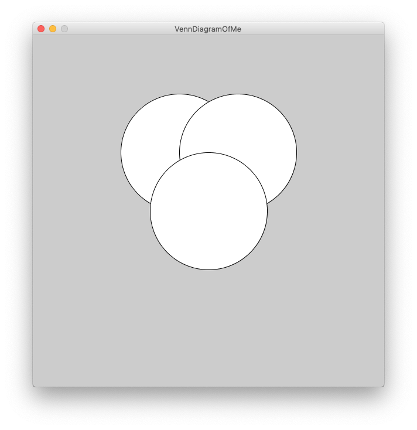
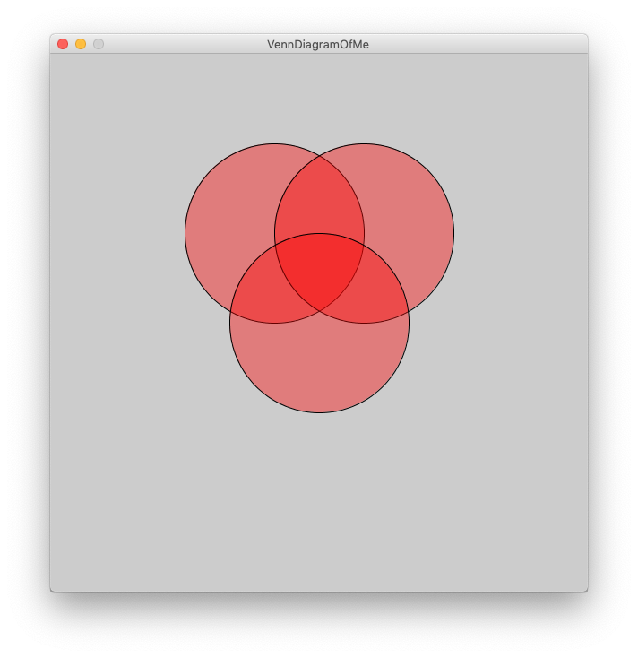
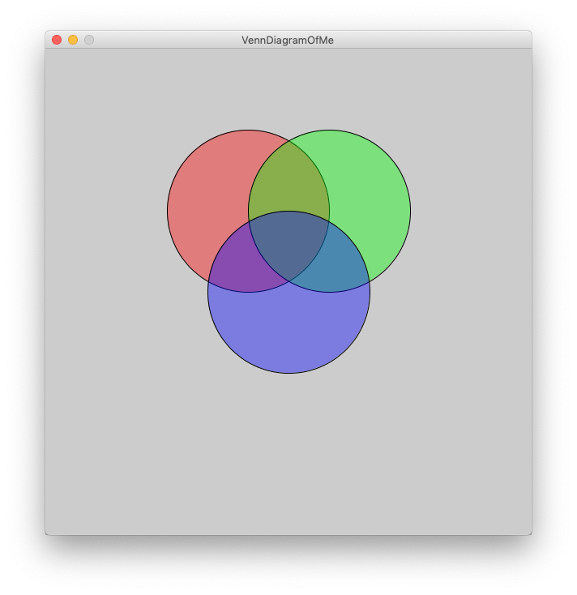

Venn Diagram of Me

Goal:
Use the RGB color model to create a Venn Diagram that showcases your personality.
Steps:
- Find the Venn Diagram recipe program ( VennDiagram.pde ) and open it using Processing.
- Run the program and you should see an empty gray window.
- After the size() command, add code to draw 3 circles to form a Venn Diagram (see picture).
The command to draw a circle in Processing is:
ellipse (centerX, centerY, circleWidth, circleHeight);
- Change the x and y of each ellipse until they overlap as in the picture.
- Run the program. It should look a bit like this
- Now to add the colors. Processing uses the following command to draw in color:
fill(red, green, blue, opacity);
where red, green, blue, and opacity are all numbers between 0 and 255. So to make see-through red circles, we add the following line of code BEFORE we draw the circles.
fill(255, 0, 0, 100);
- Run the program. It should look a bit like this We can now see the edges of all the circles because we made them "see-through" by setting the opacity to 100 (which is < 255)
- Add more fill commands (you will have to figure out where to put them) so that each ellipse has its own unique color.
- Label each of the circles with an aspect of your personality. Processing uses the following command to draw text. You will need to put numbers in place of xLocation, and yLocation. Play around with the x and y until it works with your diagram.
text("TEXT", xLocation, yLocation); - You can also make the text larger by changing the sizeOfLetters (you will have to figure out where to put this)
textSize(sizeOfLetters);